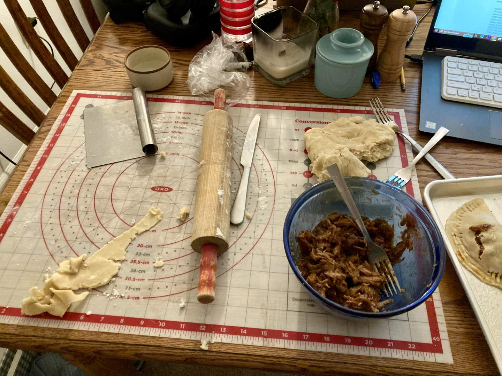

Pie 30: BBQ Pulled Pork Hand Pie
2024-01-07Filling recipe is from Me, Myself, and Pie, p. 246
Crust recipe from Tastes Better From Scatch.
Taste:
Difficulty:
Vibes:
Suggested pairing: extra sauce
“Is it nice my precious? Is it juicy? Is it scrumptiously crunchable?” – Gollum
After writing a veritable panegyric a few months ago about Me, Myself, and Pie by Sherry Gore, Katie Beth received a copy of her own for Christmas. Naturally, I flipped through it in search of savory pie recipes for this week and beyond. Rest assured, this will not be the last appearance of Ms. Gore’s book. I found some top-notch ideas, including this one.
Hand-held meat pies intrigue me on a deep level. In the UK, Australia, and New Zealand people regularly buy small meat pies at football games. That sounds awesome! Way better than a hotdog or nachos. Maybe I am biased in favor of pies and maybe those industrial pies are not as good as our homemade ones.
Regardless of what they are doing overseas, this recipe is forging ahead with the American classic of BBQ pulled pork. I used about a quarter of a huge butt roast, smothering it in Sweet Baby Ray’s sauce and 12 fl. oz. of root beer I tapped off a 2 liter owned by my grandparents (we don’t keep much soda around). I also sprinkled in some salt, pepper, and other spices.
During the long hours of slow cooking, I prepared a double batch of pie crust using our favorite recipe and refrigerated it. When the meat was finally fork-tender, I teased it apart, added more BBQ sauce, and piled the pulled pork onto disks of rolled-out pie crust.
In my greed I put rather too much meat on most of the early pies, resulting in crust cracks as I sealed them. For the later pies, I learned some restraint and managed to seal the dough around smaller bites of juicy barbeque.
Katie Beth helped me brush the tops with cream and slide them into the oven. Munching them before they were completely cool, our principal reactions were 1) OW HOT and 2) YUM. To be honest, even though the pies were tasty, they were lacking in the complexity that comes from really excellent barbeque. That’s the price of an easy recipe.
After baking the second batch of pies, I boiled down the root beer/Sweet Baby Ray’s/pork juice mixture into a thick BBQ sauce and refrigerated it for later. I’ve been using it for some truly delicious meals, including on a BBQ chicken pizza which was perhaps even more scrumptious than the hand pies.